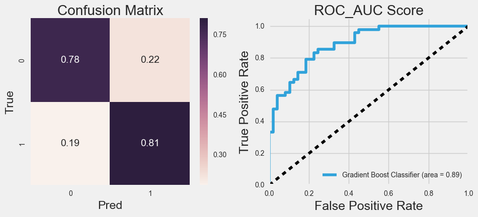
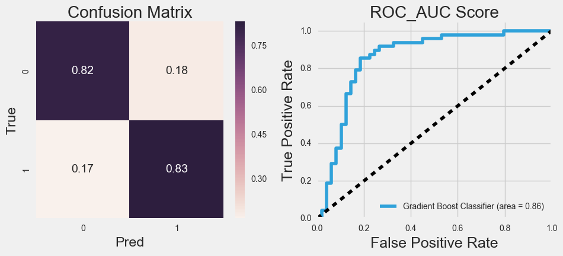
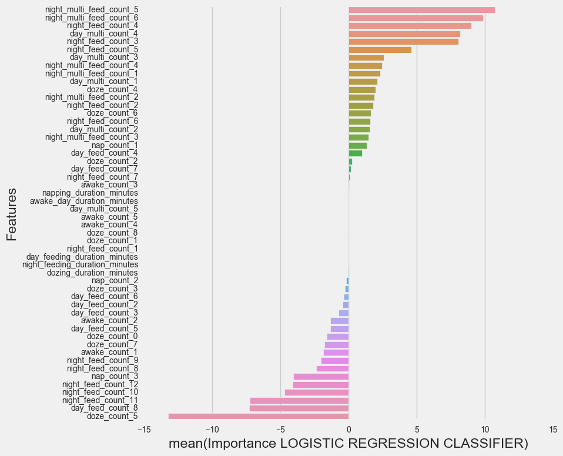

Predicting if My 1 Year Old Will Sleep

import pandas as pd
import numpy as np
import seaborn as sns
import matplotlib.pyplot as plt
from data_check import summary
plt.style.use('fivethirtyeight')
%matplotlib inline
Loading in the data and exploring a little bit.
#Import the sleep tracking data, parse the dates on this step.
df_sleep = pd.read_csv('data/sleep_tracker.csv', parse_dates=[['Date', 'Start Time'], ['Date.1', 'End Time']])
#Copy this for calculating awake time later.
df_awake = df_sleep.copy()
#Import the feeding tracking data, parse the dates on this step.
df_feed = pd.read_csv('data/feeding_tracker.csv', parse_dates=[['Date', 'Time']])
#What's in the sleep data?
print "DF_SLEEP", df_sleep.shape
df_sleep.head()
DF_SLEEP (2738, 2)
| Date_Start Time | Date.1_End Time | |
|---|---|---|
| 0 | 2017-02-27 22:55:31 | 2017-02-27 23:01:00 |
| 1 | 2017-02-27 21:13:00 | 2017-02-27 22:24:49 |
| 2 | 2017-02-27 14:42:23 | 2017-02-27 15:19:48 |
| 3 | 2017-02-27 11:01:37 | 2017-02-27 11:24:49 |
| 4 | 2017-02-27 05:15:53 | 2017-02-27 07:30:33 |
#What's in the feed data?
print "DF_FEED", df_feed.shape
df_feed.head()
DF_FEED (4239, 3)
| Date_Time | L | R | |
|---|---|---|---|
| 0 | 2017-02-27 22:44:25 | 660.0 | NaN |
| 1 | 2017-02-27 22:26:36 | NaN | 600.0 |
| 2 | 2017-02-27 21:02:51 | 352.0 | NaN |
| 3 | 2017-02-27 20:26:49 | 161.0 | NaN |
| 4 | 2017-02-27 20:14:23 | NaN | 745.0 |
Format the data into something easier to work with.
from data_formatting import merge_sleep_and_feed
df = merge_sleep_and_feed(df_sleep, df_feed)
print df.shape
df.head()
(6977, 7)
| date_time | sleeping | feeding | feeding_left | feeding_right | feeding_duration | sleeping_duration | |
|---|---|---|---|---|---|---|---|
| 0 | 2016-04-10 17:25:23 | 0 | 1 | 0 | 1 | 00:05:43 | 00:00:00 |
| 1 | 2016-04-10 18:38:30 | 0 | 1 | 1 | 0 | 00:08:35 | 00:00:00 |
| 2 | 2016-04-10 18:47:11 | 1 | 0 | 0 | 0 | 00:00:00 | 00:37:43 |
| 3 | 2016-04-10 20:01:09 | 0 | 1 | 1 | 0 | 00:06:32 | 00:00:00 |
| 4 | 2016-04-10 21:59:52 | 0 | 1 | 0 | 1 | 00:06:36 | 00:00:00 |
Remove misentered data... this was dad's fault.
from data_formatting import convert_to_minutes
#Convert durations to minutes so they can be visualized.
df['sleeping_duration_minutes'] = convert_to_minutes(df['sleeping_duration'])
df['feeding_duration_minutes'] = convert_to_minutes(df['feeding_duration'])
#Plot the sleep durations.
sleep_plot = df[df['sleeping'] == 1.0].copy()
sleep_plot['sleeping_duration_hours'] = [round(i/60, 1) for i in (sleep_plot['sleeping_duration_minutes'].round(-1))]
plt.subplots(figsize=(18, 6))
sns.countplot(x='sleeping_duration_hours', data=sleep_plot)
<matplotlib.axes._subplots.AxesSubplot at 0x11187bb50>
#Plot the feeding durations.
feed_plot = df[df['feeding'] == 1.0].copy()
feed_plot['feeding_duration_minutes'] = feed_plot['feeding_duration_minutes'].round(-1)
plt.subplots(figsize=(18, 6))
sns.countplot(x='feeding_duration_minutes', data=feed_plot)
<matplotlib.axes._subplots.AxesSubplot at 0x1118ce5d0>
#Parents of bad sleepers know EXACTLY the most hours their child has given them in a night. So I can assure you that
#my daughters longest run was a little over 7 hours. The other events where times when I forgot to stop the timer.
#The long feedings being plotted are also the results of timers being forgotten to be stopped (though this wasn't
#dad's fault this time). :P
#Filter out sleep times that were over 500.
print "SHAPE BEFORE FILTERING = ",df.shape
df = df[df['sleeping_duration_minutes'] < 500]
#Filter out feeding times that were over 30 minutes.
df = df[df['feeding_duration_minutes'] < 30]
print "SHAPE AFTER FILTERING = ",df.shape
SHAPE BEFORE FILTERING = (6977, 9)
SHAPE AFTER FILTERING = (6865, 9)
#Reset the index to avoid for loop issues later.
df = df.reset_index().drop('index', axis=1)
#Check for null values
summary(df)
ROWS = 6865 | COLUMNS = 9
| entries | null_entries | unique_entries | data_type | memory_usage(kb) | |
|---|---|---|---|---|---|
| date_time | 6865 | 0 | 6865 | datetime64[ns] | 54 |
| sleeping | 6865 | 0 | 2 | int64 | 54 |
| feeding | 6865 | 0 | 2 | int64 | 54 |
| feeding_left | 6865 | 0 | 2 | int64 | 54 |
| feeding_right | 6865 | 0 | 2 | int64 | 54 |
| feeding_duration | 6865 | 0 | 1260 | timedelta64[ns] | 54 |
| sleeping_duration | 6865 | 0 | 2331 | timedelta64[ns] | 54 |
| sleeping_duration_minutes | 6865 | 0 | 2331 | float64 | 54 |
| feeding_duration_minutes | 6865 | 0 | 763 | float64 | 54 |
Combine feeding events if the time between events is less than 5mins.
from data_formatting import combine_feedings
#As my daughter grew up she would feed on both sides. However, my wife would create a new entry for each side.
#These should be seen as one feeding event.
#So if two feeding rows are within 5mins of each other I have summed them together.
df = combine_feedings(df)
#Reset the index to avoid for loop issues later.
df = df.reset_index().drop('index', axis=1)
SHAPE BEFORE COMBINING = (6865, 9)
SHAPE AFTER COMBINING = (5985, 9)
Separate out dozing from sleeping.
from data_formatting import get_dozes, get_duration
#My daughter often dozes off and on before actually falling asleep.
#Because we have a video baby monitor my wife will mark these events on the sleep tracker.
#However these events are going to interfere with our ability to predict sleeping duration.
#So we'll separate them out into another variable called "dozes".
#If a sleeping event is less than 30mins we'll call it a doze.
df['dozes'] = get_dozes(df['sleeping'], df['sleeping_duration_minutes'])
#Get the dozing durations.
df['dozing_duration_minutes'] = get_duration(df['dozes'], df['sleeping_duration_minutes'])
#Subtract dozes out from the sleeping column so that we don't double flag them as naps or nights later.
df['sleeping'] = df['sleeping'] - df['dozes']
Mark multi-feedings.
#With the feeding rows combined, we can mark which times Heather was fed on multiple sides.
df['multi_feeding'] = df['feeding_left'] + df['feeding_right']
#Convert the multi-feedings column to boolean.
df['multi_feeding'] = [1 if i > 1 else 0 for i in df['multi_feeding']]
multi_feed_plot = df[df['feeding'] == 1].copy()
sns.countplot(y="multi_feeding", data=multi_feed_plot)
<matplotlib.axes._subplots.AxesSubplot at 0x106b91f90>
Impute awake duration.
from data_formatting import impute_awake_time
df = impute_awake_time(df_awake, df)
Split sleeping into naps and nights.
from data_formatting import day_split, night_split
#Add an hour column and then split sleeping into the categories.
df['hour'] = df['date_time'].dt.hour
#Napping equals after 9am and before 6pm.
df['napping'] = day_split(df['sleeping'], df['hour'])
df['napping_duration_minutes'] = get_duration(df['napping'], df['sleeping_duration_minutes'])
#Nights equals after 6pm and before 9am.
df['sleeping_nights'] = night_split(df['sleeping'], df['hour'])
df['sleeping_nights_duration_minutes'] = get_duration(df['sleeping_nights'], df['sleeping_duration_minutes'])
Filter awake time to only include daytime durations.
#Splitting awake and taking the day value.
#It would be too easy for the model to predict sleeping if the night value were left in the dataset.
df['awake_day'] = day_split(df['awake'], df['hour'])
df['awake_day_duration_minutes'] = get_duration(df['awake_day'], df['awake_duration_minutes'])
Split feedings into day and night.
#Feeding, day.
df['day_feeding'] = day_split(df['feeding'], df['hour'])
df['day_feeding_duration_minutes'] = get_duration(df['day_feeding'], df['feeding_duration_minutes'])
#Feeding, night.
df['night_feeding'] = night_split(df['feeding'], df['hour'])
df['night_feeding_duration_minutes'] = get_duration(df['night_feeding'], df['feeding_duration_minutes'])
#Splitting multi_feeding.
df['day_multi_feeding'] = day_split(df['multi_feeding'], df['hour'])
df['night_multi_feeding'] = night_split(df['multi_feeding'], df['hour'])
Aggregate the data into 24hr periods from 6a.m. to 6a.m..
#Make a date column.
df['date'] = df['date_time'].dt.date
#Minus a day if the hour is equal to or less than 6.
#This will result in shifting the days by six hours.
df['day_period'] = [df['date'].loc[x]-pd.Timedelta(days=1) if i <= 6 else df['date'].loc[x] \
for x,i in enumerate(df['hour'])]
#Drop the columns we're done with.
df.drop(['awake','awake_duration', 'awake_duration_minutes', 'feeding', 'feeding_duration_minutes',\
'multi_feeding', 'feeding_duration', 'date_time', 'feeding_left', 'feeding_right',\
'sleeping', 'sleeping_duration_minutes','sleeping_duration', 'date', 'hour'], axis=1, inplace=True)
#Group the data and reset the index.
df = df.groupby('day_period').sum().reset_index()
One more step of filtering to remove the days where we weren't on top of tracking.
#She did all these things every day... so if a day doesn't have them its likely we didn't track very well
#On that day.
print "SHAPE BEFORE FILTERING = ",df.shape
df = df[df['napping'] > 0]
df = df[df['awake_day'] > 0]
df = df[df['night_feeding'] > 0]
print "SHAPE AFTER FILTERING = ",df.shape
SHAPE BEFORE FILTERING = (324, 15)
SHAPE AFTER FILTERING = (321, 15)
After all that feature engineering we now have.
summary(df)
ROWS = 321 | COLUMNS = 15
| entries | null_entries | unique_entries | data_type | memory_usage(kb) | |
|---|---|---|---|---|---|
| day_period | 321 | 0 | 321 | object | 2 |
| dozes | 321 | 0 | 10 | float64 | 2 |
| dozing_duration_minutes | 321 | 0 | 221 | float64 | 2 |
| napping | 321 | 0 | 4 | float64 | 2 |
| napping_duration_minutes | 321 | 0 | 312 | float64 | 2 |
| sleeping_nights | 321 | 0 | 10 | float64 | 2 |
| sleeping_nights_duration_minutes | 321 | 0 | 318 | float64 | 2 |
| awake_day | 321 | 0 | 6 | float64 | 2 |
| awake_day_duration_minutes | 321 | 0 | 317 | float64 | 2 |
| day_feeding | 321 | 0 | 8 | float64 | 2 |
| day_feeding_duration_minutes | 321 | 0 | 312 | float64 | 2 |
| night_feeding | 321 | 0 | 13 | float64 | 2 |
| night_feeding_duration_minutes | 321 | 0 | 314 | float64 | 2 |
| day_multi_feeding | 321 | 0 | 6 | float64 | 2 |
| night_multi_feeding | 321 | 0 | 7 | float64 | 2 |
Define the target variable.
#Create a model dataframe.
df_model = df.copy()
#I want to know for each day if my daughters sleep rate was above or below her median night sleep rate.
#To do this we'll first need a sleep rate.
df_model['sleep_rate'] = df_model['sleeping_nights_duration_minutes']/df_model['sleeping_nights']
#Then the median.
df_model['sleep_rate'].median()
112.35694444444444
#Predict if the sleep rate will be above the median.
df_model['target'] = [1 if i > 112.36 else 0 for i in df_model['sleep_rate']]
Modeling
from sklearn.ensemble import GradientBoostingClassifier
from sklearn.cross_validation import train_test_split
#Custom modules written for brevity.
from classifier_plot import evaluate_classifier, evaluate_features
from grid_search import gb_grid_search
y = df_model['target']
df_model.drop(['target', 'day_period', 'sleep_rate', 'sleeping_nights', 'sleeping_nights_duration_minutes'], axis=1, inplace=True)
X = df_model
X_train, X_test, y_train, y_test = train_test_split(X, y, test_size=0.3, random_state=42, stratify=y)
Gradient Boosting Classifier
params = gb_grid_search(X_train, y_train)
Best score = 0.78125
{'max_features': 'log2', 'loss': 'exponential', 'learning_rate': 0.95, 'n_estimators': 100}
#GB Classifier
gb_clf = GradientBoostingClassifier(**params)
gb_clf.fit(X_train, y_train)
y_pred = gb_clf.predict(X_test)
y_proba = gb_clf.predict_proba(X_test)
evaluate_classifier(X_test, y_test, y_pred, y_proba, "GRADIENT BOOSTING CLASSIFIER")
-----------------------------------------------------------------------------------------------------------------
GRADIENT BOOSTING CLASSIFIER
-----------------------------------------------------------------------------------------------------------------

-------------------------------------------- --------------------------------------------
CONFUSION MATRIX CLASSIFICATION REPORT
(n = 97) n = (0 = 49) (1 = 48)
-------------------------------------------- --------------------------------------------
| TP = 38, | FN = 11 | | 0 | 1 | avg
precision | 0.81 | 0.78 | 0.79
| FP = 9, | TN = 39 | recall | 0.78 | 0.81 | 0.79
f1-score | 0.79 | 0.80 | 0.79
--------------------------------------------
total_avg | 0.79 | 0.80 | 0.79
evaluate_features(X_train.columns, gb_clf.feature_importances_, ' GRADIENT BOOSTING CLASSIFIER', 8,4)

#This is all very nice, and proves that my daughters sleep can be predicted. But now her mom and I
#really want to know what are the positive and negative things we are doing. What things improve her
#sleep chances, and impair her sleep chances?
#For this information we'll use a logistic regression model.
Logistic Regression
from model_formatting import get_dummies
from sklearn import svm, linear_model
#Set a separate dataframe for this model.
df_logit = df_model.copy()
df_logit['target'] = y
#Convert the categorical count data here into dummy variables for a logistic regression.
df_logit = get_dummies(['dozes', 'napping', 'awake_day', 'day_feeding', 'night_feeding',\
'day_multi_feeding', 'night_multi_feeding'], ['doze_count', 'nap_count',\
'awake_count', 'day_feed_count', 'night_feed_count', 'day_multi_count',\
'night_multi_feed_count'], df_logit)
#Drop one column from each dummy variable.
df_logit.drop(['doze_count_12', 'nap_count_4', 'awake_count_6', 'day_feed_count_1',\
'night_feed_count_13', 'day_multi_count_0', 'night_multi_feed_count_0'], axis=1, inplace=True)
#Define the target for logistic model
y1 = df_logit['target']
df_logit.drop(['target'], axis=1, inplace=True)
X1 = df_logit
X1_train, X1_test, y1_train, y1_test = train_test_split(X1, y1, test_size=0.3, random_state=42, stratify=y)
#Logistic Regression Classifier
logistic = linear_model.LogisticRegressionCV(random_state=99, n_jobs=-1, solver='liblinear',\
penalty='l1', max_iter=300, cv=10, Cs=5)
logistic.fit(X1_train, y1_train)
y1_pred = logistic.predict(X1_test)
y1_proba = logistic.predict_proba(X1_test)
evaluate_classifier(X1_test, y1_test, y1_pred, y1_proba, "LOGISTIC REGRESSION CLASSIFIER")
-----------------------------------------------------------------------------------------------------------------
LOGISTIC REGRESSION CLASSIFIER
-----------------------------------------------------------------------------------------------------------------

-------------------------------------------- --------------------------------------------
CONFUSION MATRIX CLASSIFICATION REPORT
(n = 97) n = (0 = 49) (1 = 48)
-------------------------------------------- --------------------------------------------
| TP = 40, | FN = 9 | | 0 | 1 | avg
precision | 0.83 | 0.82 | 0.82
| FP = 8, | TN = 40 | recall | 0.82 | 0.83 | 0.82
f1-score | 0.82 | 0.82 | 0.82
--------------------------------------------
total_avg | 0.82 | 0.82 | 0.82
logistic_coef = []
for i in logistic.coef_.tolist():
for j in i:
logistic_coef.append(j)
evaluate_features(X1_train.columns, logistic_coef, ' LOGISTIC REGRESSION CLASSIFIER', 8,8.5)

FROM THIS POINT ON THIS ARTICLE IS STILL BEING DRAFTED. IT IS PUBLISHED HERE FOR PROOFREADING PURPOSES.
Filter to only the statistically significant features and plot the coefficients.
from scipy import stats
import statsmodels.formula.api as sm
from patsy import dmatrices
from sklearn.cross_validation import cross_val_score
from sklearn.metrics import accuracy_score, precision_score, confusion_matrix, classification_report
from sklearn import ensemble, preprocessing
pd.options.display.max_columns = 50
pd.options.display.max_colwidth = 300
holder = []
for i in df_model.columns:
holder.append(str(i))
holder = u' + '.join(holder)
print holder
day_period + dozes + dozing_duration_minutes + napping + napping_duration_minutes + sleeping_nights + sleeping_nights_duration_minutes + awake_day + awake_day_duration_minutes + day_feeding + day_feeding_duration_minutes + night_feeding + night_feeding_duration_minutes + day_multi_feeding + night_multi_feeding + sleep_rate + target
#model = sm.logit("target ~ day_period + dozes + dozing_duration_minutes + napping + napping_duration_minutes + sleeping_nights + sleeping_nights_duration_minutes + awake_day + awake_day_duration_minutes + day_feeding + day_feeding_duration_minutes + night_feeding + night_feeding_duration_minutes + day_multi_feeding + night_multi_feeding + sleep_rate", data=df_model).fit()
#model.summary()
Warning: Maximum number of iterations has been exceeded.
Current function value: inf
Iterations: 35
/Users/nathanhall/anaconda2/lib/python2.7/site-packages/statsmodels-0.8.0-py2.7-macosx-10.6-x86_64.egg/statsmodels/discrete/discrete_model.py:1214: RuntimeWarning: overflow encountered in exp
return 1/(1+np.exp(-X))
/Users/nathanhall/anaconda2/lib/python2.7/site-packages/statsmodels-0.8.0-py2.7-macosx-10.6-x86_64.egg/statsmodels/discrete/discrete_model.py:1264: RuntimeWarning: divide by zero encountered in log
return np.sum(np.log(self.cdf(q*np.dot(X,params))))
---------------------------------------------------------------------------
LinAlgError Traceback (most recent call last)
<ipython-input-67-7b78c0c03d8d> in <module>()
----> 1 model = sm.logit("target ~ day_period + dozes + dozing_duration_minutes + napping + napping_duration_minutes + sleeping_nights + sleeping_nights_duration_minutes + awake_day + awake_day_duration_minutes + day_feeding + day_feeding_duration_minutes + night_feeding + night_feeding_duration_minutes + day_multi_feeding + night_multi_feeding + sleep_rate", data=df_model).fit()
2 model.summary()
/Users/nathanhall/anaconda2/lib/python2.7/site-packages/statsmodels-0.8.0-py2.7-macosx-10.6-x86_64.egg/statsmodels/discrete/discrete_model.pyc in fit(self, start_params, method, maxiter, full_output, disp, callback, **kwargs)
1375 bnryfit = super(Logit, self).fit(start_params=start_params,
1376 method=method, maxiter=maxiter, full_output=full_output,
-> 1377 disp=disp, callback=callback, **kwargs)
1378
1379 discretefit = LogitResults(self, bnryfit)
/Users/nathanhall/anaconda2/lib/python2.7/site-packages/statsmodels-0.8.0-py2.7-macosx-10.6-x86_64.egg/statsmodels/discrete/discrete_model.pyc in fit(self, start_params, method, maxiter, full_output, disp, callback, **kwargs)
202 mlefit = super(DiscreteModel, self).fit(start_params=start_params,
203 method=method, maxiter=maxiter, full_output=full_output,
--> 204 disp=disp, callback=callback, **kwargs)
205
206 return mlefit # up to subclasses to wrap results
/Users/nathanhall/anaconda2/lib/python2.7/site-packages/statsmodels-0.8.0-py2.7-macosx-10.6-x86_64.egg/statsmodels/base/model.pyc in fit(self, start_params, method, maxiter, full_output, disp, fargs, callback, retall, skip_hessian, **kwargs)
456 Hinv = cov_params_func(self, xopt, retvals)
457 elif method == 'newton' and full_output:
--> 458 Hinv = np.linalg.inv(-retvals['Hessian']) / nobs
459 elif not skip_hessian:
460 H = -1 * self.hessian(xopt)
/Users/nathanhall/anaconda2/lib/python2.7/site-packages/numpy/linalg/linalg.pyc in inv(a)
524 signature = 'D->D' if isComplexType(t) else 'd->d'
525 extobj = get_linalg_error_extobj(_raise_linalgerror_singular)
--> 526 ainv = _umath_linalg.inv(a, signature=signature, extobj=extobj)
527 return wrap(ainv.astype(result_t, copy=False))
528
/Users/nathanhall/anaconda2/lib/python2.7/site-packages/numpy/linalg/linalg.pyc in _raise_linalgerror_singular(err, flag)
88
89 def _raise_linalgerror_singular(err, flag):
---> 90 raise LinAlgError("Singular matrix")
91
92 def _raise_linalgerror_nonposdef(err, flag):
LinAlgError: Singular matrix
mfx = heather_mod.get_margeff()
print(mfx.summary())
Logit Marginal Effects
=====================================
Dep. Variable: target
Method: dydx
At: overall
==================================================================================================
dy/dx std err z P>|z| [0.025 0.975]
--------------------------------------------------------------------------------------------------
napping 2.6830 1474.957 0.002 0.999 -2888.180 2893.546
napping_duration_minutes -0.0002 0.001 -0.322 0.748 -0.001 0.001
awake_day -2.7214 1474.957 -0.002 0.999 -2893.584 2888.141
awake_day_duration_minutes -0.0003 0.000 -2.049 0.040 -0.001 -1.42e-05
day_feeding -0.0007 0.027 -0.026 0.979 -0.054 0.052
night_feeding -0.1057 0.013 -7.838 0.000 -0.132 -0.079
day_feeding_duration_minutes -0.0017 0.003 -0.529 0.597 -0.008 0.005
night_feeding_duration_minutes -0.0011 0.002 -0.641 0.522 -0.005 0.002
day_multi_feeding 0.0224 0.029 0.779 0.436 -0.034 0.079
night_multi_feeding 0.0599 0.020 3.004 0.003 0.021 0.099
==================================================================================================